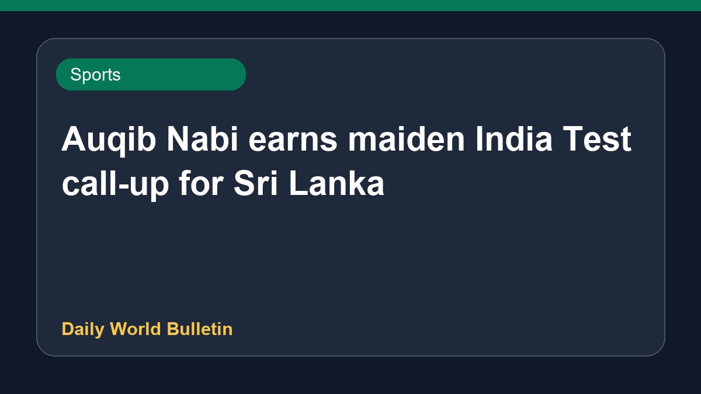

Auqib Nabi earns maiden India Test call-up for Sri Lanka

Auqib Nabi has received his first Test call-up for India's upcoming tour of Sri Lanka, replacing the injured Jasprit Bumrah in the squad. The Board of Control for Cricket in India announced the team for the series, featuring several fresh faces in the Test lineup. Details regarding the full squad selection and match schedules are limited based on the current reports.
Original source: Sports News Sources
Auqib Nabi earns maiden India Test call-up for Sri Lanka series - Cricbuzz ↗
Auqib Nabi earns maiden India Test call-up for Sri Lanka series - Cricbuzz ↗